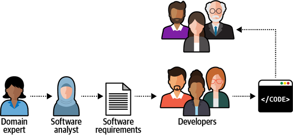
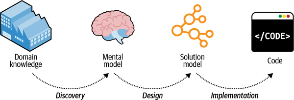

It’s developers’ (mis)understanding, not domain experts’ knowledge, that gets released in production.
Alberto Brandolini
In the previous chapter, we started exploring business domains. You learned how to identify a company’s business domains, or areas of activity, and analyze its strategy to compete in them; that is, its business subdomains’ boundaries and types.
This chapter continues the topic of business domain analysis but in a different dimension: depth. It focuses on what happens inside a subdomain: its business function and logic. You will learn the domain-driven design tool for effective communication and knowledge sharing: the ubiquitous language. Here we will use it to learn the intricacies of business domains. Later in the book we will use it to model and implement their business logic in software.
The software systems we are building are solutions to business problems. In this context, the word problem doesn’t resemble a mathematical problem or a riddle that you can solve and be done with. In the context of business domains, “problem” has a broader meaning. A business problem can be challenges associated with optimizing workflows and processes, minimizing manual labor, managing resources, supporting decisions, managing data, and so on.
Business problems appear both at the business domain and subdomain levels. A company’s goal is to provide a solution for its customers’ problems. Going back to the FedEx example in Chapter 1, that company’s customers need to ship packages in limited time frames, so it optimizes the shipping process.
Subdomains are finer-grained problem domains whose goal is to provide solutions for specific business capabilities. A knowledge management subdomain optimizes the process of storing and retrieving information. A clearing subdomain optimizes the process of executing financial transactions. An accounting subdomain keeps track of the company’s funds.
To design an effective software solution, we have to grasp at least the basic knowledge of the business domain. As we discussed in Chapter 1, this knowledge belongs to domain experts: it’s their job to specialize in and comprehend all the intricacies of the business domain. By no means should we, nor can we, become domain experts. That said, it’s crucial for us to understand domain experts and to use the same business terminology they use.
To be effective, the software has to mimic the domain experts’ way of thinking about the problem—their mental models. Without an understanding of the business problem and the reasoning behind the requirements, our solutions will be limited to “translating” business requirements into source code. What if the requirements miss a crucial edge case? Or fail to describe a business concept, limiting our ability to implement a model that will support future requirements?
As Alberto Brandolini1 says, software development is a learning process; working code is a side effect. A software project’s success depends on the effectiveness of knowledge sharing between domain experts and software engineers. We have to understand the problem in order to solve it.
Effective knowledge sharing between domain experts and software engineers requires effective communication. Let’s take a look at the common impediments to effective communication in software projects.
It’s safe to say that almost all software projects require the collaboration of stakeholders in different roles: domain experts, product owners, engineers, UI and UX designers, project managers, testers, analysts, and others. As in any collaborative effort, the outcome depends on how well all those parties can work together. For example, do all stakeholders agree on what problem is being solved? What about the solution they are building—do they hold any conflicting assumptions about its functional and nonfunctional requirements? Agreement and alignment on all project-related matters are essential to a project’s success.
Research into why software projects fail has shown that effective communication is essential for knowledge sharing and project success.2 Yet, despite its importance, effective communication is rarely observed in software projects. Often, businesspeople and engineers have no direct interaction with one another. Instead, domain knowledge is pushed down from domain experts to engineers. It is delivered through people playing the role of mediators, or “translators,” systems/business analysts, product owners, and project managers. Such common knowledge sharing flow is illustrated in Figure 2-1.

During the traditional software development lifecycle, the domain knowledge is “translated” into an engineer-friendly form known as an analysis model, which is a description of the system’s requirements rather than an understanding of the business domain behind it. While the intentions may be good, such mediation is hazardous to knowledge sharing. In any translation, information is lost; in this case, domain knowledge that is essential for solving business problems gets lost on its way to the software engineers. This is not the only such translation on a typical software project. The analysis model is translated into the software design model (a software design document, which is translated into an implementation model or the source code itself). As often happens, documents go out of date quickly. The source code is used to communicate business domain knowledge to software engineers who will maintain the project later. Figure 2-2 illustrates the different translations needed for domain knowledge to be implemented in code.

Such a software development process resembles the children’s game Telephone:3 the message, or domain knowledge, often becomes distorted. The information leads to software engineers implementing the wrong solution, or the right solution but to the wrong problems. In either case, the outcome is the same: a failed software project.
Domain-driven design proposes a better way to get the knowledge from domain experts to software engineers: by using a ubiquitous language.
Using a ubiquitous language is the cornerstone practice of domain-driven design. The idea is simple and straightforward: if parties need to communicate efficiently, instead of relying on translations, they have to speak the same language.
Although this notion is borderline common sense, as Voltaire said, “common sense is not so common.” The traditional software development lifecycle implies the following translations:
Domain knowledge into an analysis model
Analysis model into requirements
Requirements into system design
System design into source code
Instead of continuously translating domain knowledge, domain-driven design calls for cultivating a single language for describing the business domain: the ubiquitous language.
All project-related stakeholders—software engineers, product owners, domain experts, UI/UX designers—should use the ubiquitous language when describing the business domain. Most importantly, domain experts must be comfortable using the ubiquitous language when reasoning about the business domain; this language will represent both the business domain and the domain experts’ mental models.
Only through the continuous use of the ubiquitous language and its terms can a shared understanding among all of the project’s stakeholders be cultivated.
It’s crucial to emphasize that the ubiquitous language is the language of the business. As such, it should consist of business domain–related terms only. No technical jargon! Teaching business domain experts about singletons and abstract factories is not your goal. The ubiquitous language aims to frame the domain experts’ understanding and mental models of the business domain in terms that are easy to understand.
Let’s say we are working on an advertising campaign management system. Consider the following statements:
An advertising campaign can display different creative materials.
A campaign can be published only if at least one of its placements is active.
Sales commissions are accounted for after transactions are approved.
All of these statements are formulated in the language of the business. That is, they reflect the domain experts’ view of the business domain.
On the other hand, the following statements are strictly technical and thus do not fit the notion of the ubiquitous language:
The advertisement iframe displays an HTML file.
A campaign can be published only if it has at least one associated record in the active-placements table.
Sales commissions are based on correlated records from the transactions and approved-sales tables.
These latter statements are purely technical and will be unclear to domain experts. Suppose engineers are only familiar with this technical, solution-oriented view of the business domain. In that case, they won’t be able to completely understand the business logic or why it operates the way it does, which will limit their ability to model and implement an effective solution.
The ubiquitous language must be precise and consistent. It should eliminate the need for assumptions and should make the business domain’s logic explicit.
Since ambiguity hinders communication, each term of the ubiquitous language should have one and only one meaning. Let’s look at a few examples of unclear terminology and how it can be improved.
Let’s say that in some business domain, the term policy has multiple meanings: it can mean a regulatory rule or an insurance contract. The exact meaning can be worked out in human-to-human interaction, depending on the context. Software, however, doesn’t cope well with ambiguity, and it can be cumbersome and challenging to model the “policy” entity in code.
Ubiquitous language demands a single meaning for each term, so “policy” should be modeled explicitly using the two terms regulatory rule and insurance contract.
Two terms cannot be used interchangeably in a ubiquitous language. For example, many systems use the term user. However, a careful examination of the domain experts’ lingo may reveal that user and other terms are used interchangeably: for example, user, visitor, administrator, account, etc.
Synonymous terms can seem harmless at first. However, in most cases, they denote different concepts. In this example, both visitor and account technically refer to the system’s users; however, in most systems, unregistered and registered users represent different roles and have different behaviors. For example, the “visitors” data is used mainly for analysis purposes, whereas “accounts” actually uses the system and its functionality.
It is preferable to use each term explicitly in its specific context. Understanding the differences between the terms in use allows for building simpler and clearer models and implementations of the business domain’s entities.
Now let’s look at the ubiquitous language from a different perspective: modeling.
A model is a simplified representation of a thing or phenomenon that intentionally emphasizes certain aspects while ignoring others. Abstraction with a specific use in mind.
Rebecca Wirfs-Brock
A model is not a copy of the real world but a human construct that helps us make sense of real-world systems.
A canonical example of a model is a map. Any map is a model, including navigation maps, terrain maps, world maps, subway maps, and others, as shown in Figure 2-3.
None of these maps represents all the details of our planet. Instead, each map contains just enough data to support its particular purpose: the problem it is supposed to solve.
All models have a purpose, and an effective model contains only the details needed to fulfill its purpose. For example, you won’t see subway stops on a world map. On the other hand, you cannot use a subway map to estimate distances. Each map contains just the information it is supposed to provide.
This point is worth reiterating: a useful model is not a copy of the real world. Instead, a model is intended to solve a problem, and it should provide just enough information for that purpose. Or, as statistician George Box put it, “All models are wrong, but some are useful.”
In its essence, a model is an abstraction. The notion of abstraction allows us to handle complexity by omitting unnecessary details and leaving only what’s needed for solving the problem at hand. On the other hand, an ineffective abstraction removes necessary information or produces noise by leaving what’s not required. As noted by Edsger W. Dijkstra in his paper “The Humble Programmer,”4 the purpose of abstracting is not to be vague but to create a new semantic level in which one can be absolutely precise.
When cultivating a ubiquitous language, we are effectively building a model of the business domain. The model is supposed to capture the domain experts’ mental models—their thought processes about how the business works to implement its function. The model has to reflect the involved business entities and their behavior, cause and effect relationships, and invariants.
The ubiquitous language we use is not supposed to cover every possible detail of the domain. That would be equivalent to making every stakeholder a domain expert. Instead, the model is supposed to include just enough aspects of the business domain to make it possible to implement the required system; that is, to address the specific problem the software is intended to solve. In the following chapters, you will see how the ubiquitous language can drive low-level design and implementation decisions.
Effective communication between engineering teams and domain experts is vital. The importance of this communication grows with the complexity of the business domain. The more complex the business domain is, the harder it is to model and implement its business logic in code. Even a slight misunderstanding of a complicated business domain, or its underlying principles, will inadvertently lead to an implementation prone to severe bugs. The only reliable way to verify a business domain’s understanding is to converse with domain experts and do it in the language they understand: the language of the business.
Formulation of a ubiquitous language requires interaction with its natural holders, the domain experts. Only interactions with actual domain experts can uncover inaccuracies, wrong assumptions, or an overall flawed understanding of the business domain.
All stakeholders should consistently use the ubiquitous language in all project-related communications to spread knowledge about and foster a shared understanding of the business domain. The language should be continuously reinforced throughout the project: requirements, tests, documentation, and even the source code itself should use this language.
Most importantly, cultivation of a ubiquitous language is an ongoing process. It should be constantly validated and evolved. Everyday use of the language will, over time, reveal deeper insights into the business domain. When such breakthroughs happen, the ubiquitous language must evolve to keep pace with the newly acquired domain knowledge.
There are tools and technologies that can alleviate the processes of capturing and managing a ubiquitous language.
For example, a wiki can be used as a glossary to capture and document the ubiquitous language. Such a glossary alleviates the onboarding process of new team members, as it serves as a go-to place for information about the business domain’s terminology.
It’s important to make glossary maintenance a shared effort. When a ubiquitous language is changed, all team members should be encouraged to go ahead and update the glossary. That’s contrary to a centralized approach, in which only team leaders or architects are in charge of maintaining the glossary.
Despite the obvious advantages of maintaining a glossary of project-related terminology, it has an inherent limitation. Glossaries work best for “nouns”: names of entities, processes, roles, and so on. Although nouns are important, capturing the behavior is crucial. The behavior is not a mere list of verbs associated with nouns, but the actual business logic, with its rules, assumptions, and invariants. Such concepts are much harder to document in a glossary. Hence, glossaries are best used in tandem with other tools that are better suited to capture the behavior; for example, use cases or Gherkin tests.
Automated tests written in the Gherkin language are not only great tools for capturing the ubiquitous language but also act as an additional tool for bridging the gap between domain experts and software engineers. Domain experts can read the tests and verify the system’s expected behavior.5 For example, see the following test written in the Gherkin language:
Scenario:Notify the agent about a new support caseGivenVincent Jules submits a new support case saying:"""I need help configuring AWS Infinidash"""Whenthe ticket is assigned to Mr. WolfThenthe agent receives a notification about the new ticket
Managing a Gherkin-based test suite can be challenging at times, especially at the early stages of a project. However, it is definitely worth it for complex business domains.
Finally, there are even static code analysis tools that can verify the usage of a ubiquitous language’s terms. A notable example for such a tool is NDepend.
While these tools are useful, they are secondary to the actual use of a ubiquitous language in day-to-day interactions. Use the tools to support the management of the ubiquitous language, but don’t expect the documentation to replace the actual usage. As the Agile Manifesto says, “Individuals and interactions over processes and tools.”
In theory, cultivating a ubiquitous language sounds like a simple, straightforward process. In practice, it isn’t. The only reliable way to gather domain knowledge is to converse with domain experts. Quite often, the most important knowledge is tacit. It’s not documented or codified but resides only in the minds of domain experts. The only way to access it is to ask questions.
As you gain experience in this practice, you will notice that frequently, this process involves not merely discovering knowledge that is already there, but rather co-creating the model in tandem with domain experts. There may be ambiguities and even white spots in domain experts’ own understanding of the business domain; for example, defining only the “happy path” scenarios but not considering edge cases that challenge the accepted assumptions. Furthermore, you may encounter business domain concepts that lack explicit definitions. Asking questions about the nature of the business domain often makes such implicit conflicts and white spots explicit. This is especially common for core subdomains. In such a case, the learning process is mutual—you are helping the domain experts better understand their field.
When introducing domain-driven design practices to a brownfield project, you will notice that there is already a formed language for describing the business domain, and that the stakeholders use it. However, since DDD principles do not drive that language, it won’t necessarily reflect the business domain effectively. For example, it may use technical terms, such as database table names. Changing a language that is already being used in an organization is not easy. The essential tool in such a situation is patience. You need to make sure the correct language is used where it’s easy to control it: in the documentation and source code.
Finally, the question about the ubiquitous language that I am asked often at conferences is what language should we use if the company is not in an English-speaking country. My advice is to at least use English nouns for naming the business domain’s entities. This will alleviate using the same terminology in code.
Effective communication and knowledge sharing are crucial for a successful software project. Software engineers have to understand the business domain in order to design and build a software solution.
Domain-driven design’s ubiquitous language is an effective tool for bridging the knowledge gap between domain experts and software engineers. It fosters communication and knowledge sharing by cultivating a shared language that can be used by all the stakeholders throughout the project: in conversations, documentation, tests, diagrams, source code, and so on.
To ensure effective communication, the ubiquitous language has to eliminate ambiguities and implicit assumptions. All of a language’s terms have to be consistent—no ambiguous terms and no synonymous terms.
Cultivating a ubiquitous language is a continuous process. As the project evolves, more domain knowledge will be discovered. It’s important for such insights to be reflected in the ubiquitous language.
Tools such as wiki-based glossaries and Gherkin tests can greatly alleviate the process of documenting and maintaining a ubiquitous language. However, the main prerequisite for an effective ubiquitous language is usage: the language has to be used consistently in all project-related communications.
What is the primary purpose of a ubiquitous language?
To create a programming language that can be used for implementing the required business functionality.
To provide a shared and common language that bridges the gap between technical and business teams.
To document the software requirements in a formal specification
To develop a secret code that only the development team understands
Who should be able to contribute to the definition of a ubiquitous language? Select all that apply.
Domain experts
Software engineers
End users
All of the project’s stakeholders
Where should a ubiquitous language be used? Select all that apply.
In-person conversations
Documentation
Code
All of the above
Which of the following statements is correct?
The ubiquitous language should evolve as the understanding of the domain improves.
The ubiquitous language should be static and unchanging once defined.
The ubiquitous language should reflect the project’s technological design decisions.
The ubiquitous language can only be used by the development team.
Consider a software project you are working on at the moment or worked on in the past:
Try to come up with concepts of the business domain that you could use in conversations with domain experts.
Try to identify examples of inconsistent terms: business domain concepts that have either different meanings or identical concepts represented by different terms.
Have you encountered software development inefficiencies that resulted from poor communication?
Assume you are working on a project and you notice that domain experts from different organizational units use the same term, for example, policy, to describe unrelated concepts of the business domain.
The resultant ubiquitous language is based on domain experts’ mental models but fails to fulfill the requirement of a term having a single meaning.
Before you continue to the next chapter, how would you address such a conundrum?
1 Brandolini, Alberto. (n.d.). Introducing EventStorming. Leanpub.
2 Sudhakar, Goparaju Purna. (2012). “A Model of Critical Success Factors for Software Projects.” Journal of Enterprise Information Management, 25(6), 537–558.
3 Players form a line, and the first player comes up with a message and whispers it into the ear of the second player. The second player repeats the message to the third player, and so on. The last player announces the message they heard to the entire group. The first player then compares the original message with the final version. Although the objective is to communicate the same message, it usually gets garbled and the last player receives a message that is significantly different from the original one.
4 Edsger W. Dijkstra, “The Humble Programmer”.
5 But please don’t fall into the trap of thinking that domain experts will write Gherkin tests.